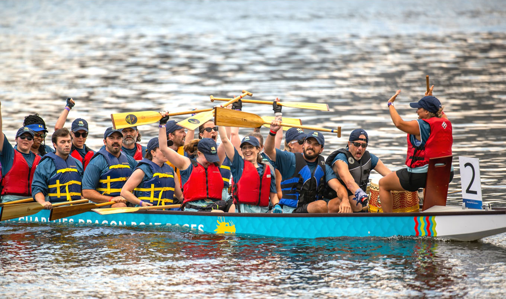

Baltimore Harbor's Dragon Boat Races
Hear the drums. See the waves. Feel the energy! More than 20 teams paddle for glory after months of preparation. Welcome to the 2025 Dragon Boat Races!
Join us on September 13 to share in the excitement and root for our racers. Teams will practice for 8 weeks leading up to Race Day at Baltimore's Inner Harbor. Thousands of spectators will witness several hours of crazy competition.
2025 will commemorate the 13th biennial Catholic Charities Dragon Boat Races—a truly special event that combines athleticism and competition with fundraising and awareness of Catholic Charities. Since 1998, over 50 companies, non-profits, and schools have partnered with us to raise over $5 million dollars in support of our mission – to love, serve, and teach, work for justice, and improve the lives of Marylanders in need.
How to participate
Get ready to race
Here you’ll find all there is to know about the Dragon Boat Races. Dive into the details on the team sponsorship options, check the calendar for upcoming events, and read up on the rules and history of dragon boat racing. This year, we’re making the race more accessible than ever with a sea of ways to join in the fun.
Register your team onlineRace Schedule
6:30 a.m. Team Registration Begins
7:45 a.m. Welcome
8:30 a.m. Round 1 Time Trials
10:00 a.m. Round 2 Time Trials
12:30 p.m. Semifinals
1:30 p.m. Championship Races
2:45 p.m. Award Ceremony
History of Dragon Boat Racing
Dragon Boat racing is a reflection of a memorable historical event that occurred more than 2,000 years ago. Numerous supremacy wars were erupting during the fourth century B.C. when Emperor Chu’s kingdom was one of the mightiest remaining. It is a story of self-sacrifice.
A man of great respect, Qu Yuan, a poet, minister and counselor to Emperor Chu, was cast into exile because of his politically sensitive poems. Distraught and inconsolable, Qu Yan grasped a large stone and threw himself into the Mi Lo River in an act of desperation and sorrow.
Qu Yuan was loved so by the people that local fisherman raced to the tragic scene in their long, swift boats, beating their drums and splashing their oars to scare the many fish away from his body. They threw also tossed rice into the river some say in an attempt to protect Qu Yuan’s body from the fish and others to feed his soul.
Dragon Boat Festivals are held in China on the fifth day of the fifth month of the lunar calendar, the same day Qu Yuan is said to have drowned himself in the Mi Lo River. Many of the original rituals are still practiced today at festivals all over the world. As part of the opening ceremonies, a common practice is to “Awaken the Dragon” by dotting the eyes of the Dragon’s heads of each of the boats. Historically, the Dragon was the favored symbol of the Emperor, and the best Chinese artists were commissioned. Shortly after one such artist put the finishing touches on his work by etching the eyes on his exquisite stone Dragon, thunder and turbulent weather swept the land. It was believed the mythical beast was “awakened” and had “come to life”. Also, the significance of the eye dotting was to impress the boats and their crews with the strength of the Dragon and the blessing of the Goddess of the Sea.
2025 Calendar
May & June: Orientation
Orientation workshops for team leaders known as Captain, Co-Captain, and Cruise Director (oversees Team Spirit Activities) will take place as well as a special event which celebrates team building, commitment, competition, and community.
July & August: Practice starts
Practice begins on July 14th and lasts for 8 weeks until September 5th at the Baltimore Yacht Basin Marina. On land, teammates work on their entries for the tent, chant and hat contests.
Saturday, Sept. 13: Race Day!
Invite all your employees and their family and friends to the Inner Harbor for a day of fun, festivities, and excitement.
Practices and Race Days
Teams are comprised of 25 members (company employees, vendors, family, or friends.) There are 20 paddlers (minimum of 8 women), 1 drummer, and 1 steerer. The 3 other members rotate or serve as alternates.
Practices happen once a week for 8 weeks during a designated time slot under the supervision of our coaching staff.
Race Day involves time trials to set brackets for elimination heats. The competition is exhilarating as teams battle throughout the day for the coveted Dragon Cup!